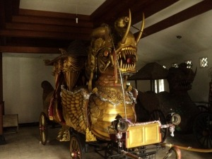
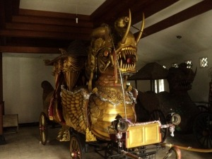

Museum Prabu Geusan Ulun
Telusuri koleksi artefak berharga dari masa Kerajaan Sumedang Larang yang kaya akan sejarah. Pelajari lebih dalam tentang warisan budaya Sunda yang tak ternilai.
Temukan Warisan Budaya Sunda dan Destinasi Alam Tersembunyi di Parahyangan.
Eksplorasi Destinasi UnggulanNikmati pemandangan kota Sumedang dari ketinggian, cocok untuk rekreasi keluarga.
Lihat Detail
Gunung berapi tidak aktif yang populer untuk pendakian, menawarkan jalur yang menantang.
Lihat DetailTempat wisata alam dan rekreasi bertema negeri dongeng dengan banyak spot foto instagramable.
Lihat DetailPanorama alam hutan pinus yang terjaga keasriannya dengan kesegaran udaranya.
Lihat DetailGunung Kunci sendiri menyimpan nilai historis yang panjang. Disini didirikan benteng pertahanan Belanda.
Lihat DetailTelusuri koleksi artefak berharga dari masa Kerajaan Sumedang Larang yang kaya akan sejarah. Pelajari lebih dalam tentang warisan budaya Sunda yang tak ternilai.
Dianggap sebagai pelopor tahu Sumedang, tempat ini wajib dikunjungi. Menawarkan tahu yang baru digoreng dan varian tahu dengan nori, renyah di luar dan lembut di dalam.
Pusat oleh-oleh tahu yang sangat terkenal. Selain tahu goreng, Anda juga bisa membeli tahu mentah, opak, dan oleh-oleh khas Sumedang lainnya.
Tempat ngopi estetis di pusat kota. Populer dengan suasananya yang adem dan arsitektur yang unik buat foto-foto.

Kafe hits yang terkenal dengan kopi enak dan nuansa pedesaan, interior instagramable Tempat asyik buat nongkrong bareng teman-teman.
 


Ini adalah beberapa koleksi pusaka peninggalan Kerajaan Sumedang Larang yang tersimpan di museum.